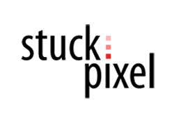

PINGRAB, INC. |
LOS ANGELES, CA
Mobile Application Developer Intern |
JUNE 2017 - JAN 2018
- As a Mobile Application Developer Intern at Pingrab, Inc., I worked with Xcode 8 and Swift
4 to develop the iOS version of the Pingrab application.
- During my internship, I was able to work very closely with the CEO of Pingrab in designing
the app's interface and deciding its capabilities and uses. This experience gave me a very close
look into the startup environment and taught me to handle a fast and professional work pace.
- One of my largest contributions as an intern was my development of the entirety of the in-app
messaging system. In creating the messaging system, I utilized over 30 intricate pods, including
the XMPPFramework, Alamofire, and CocoaLumberJack.
- Having such a great experience and learning an incredible amount over the summer, I was able
to continue my internship with Pingrab throughout the Fall 2017 semester, until January 2018.
COD.ED (formerly CodeTech Leg Godt) |
FULLERTON, CA
Educator |
JUNE 2016 - AUG 2016
- Working as an educator at Cod.ED, I was given the opportunity to teach children--some as
young as 7 years old--topics ranging from the most basic principles of computing, to more intricate
computer science concepts such as recursion and data structures.
- Collaborating with the other educators, I worked to develop lesson plans and daily quizzes
that we administered to the students to test their knowledge on computer science-related knowledge.
- Through our hard work at CodeTech Leg Godt that summer, our team of educators was able to
help our high school students achieve a pass rate of over 95% on the AP Computer Science exam
administered later that school year!

STUCKPIXEL, INC. |
IRVINE, CA
Computer Science Leadership Program |
JUNE 2014 - AUG 2014
- During my time at StuckPixel, Inc., I shadowed mobile application developers throughout their
day-to-day procedures, which mainly consisted of the development of the mobile game "Finger Frenzy",
and the maintenance of StuckPixel's hit app, "Funny Pics".
- In addition to shadowing application developers, I was also given an opportunity to lead a
small group of interns in a hands-on Arduino-building project.